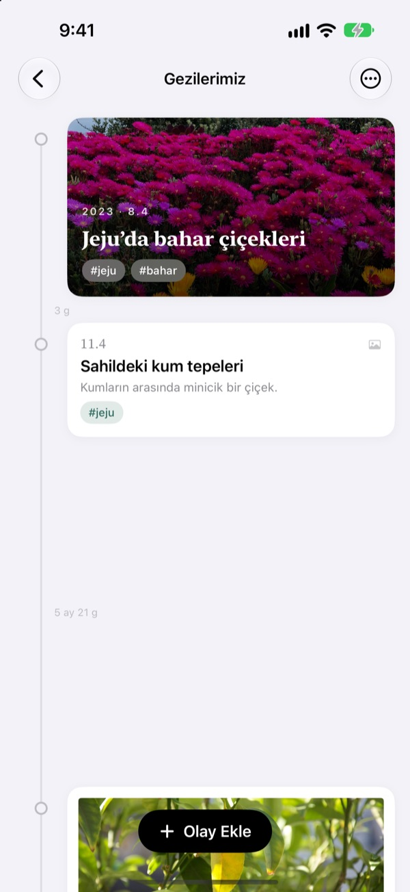
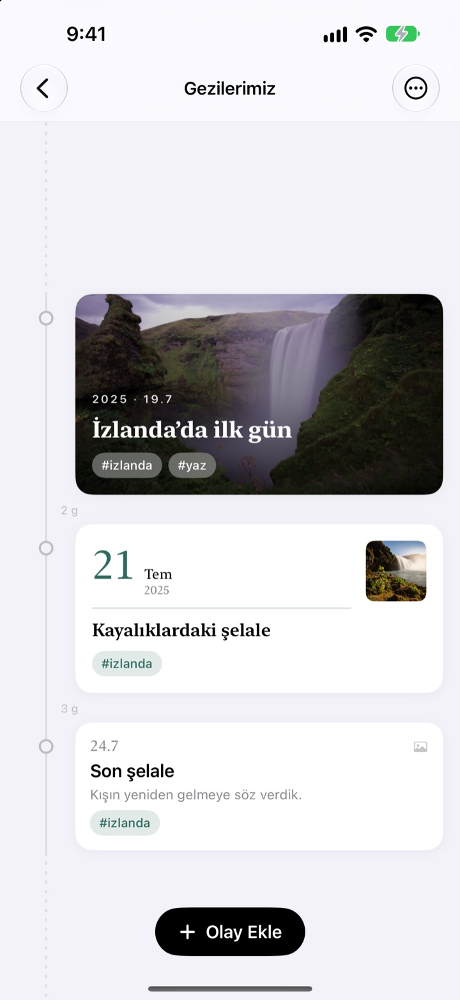
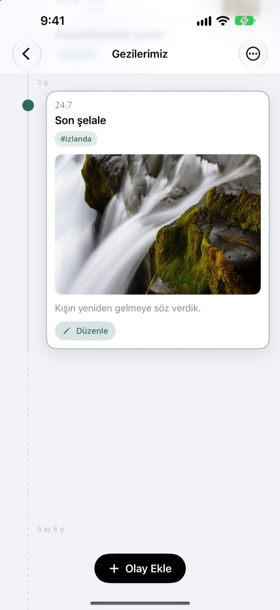
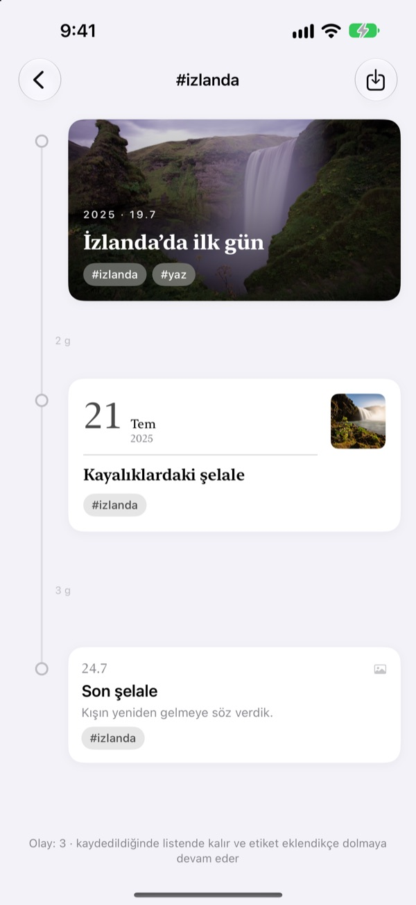
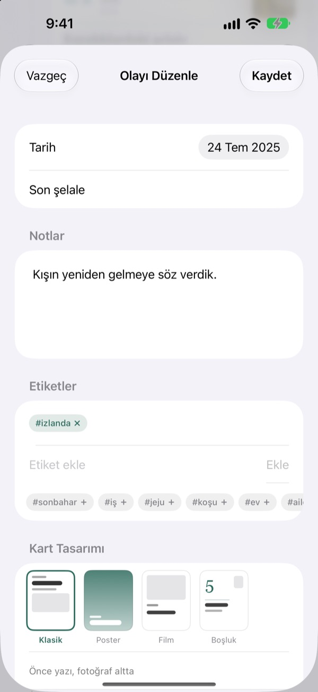

Zamanla birlikte
uzayan bir çizelge
Üç gün ile beş gün 3'e 5 oranında açılır. İki yıl dört ay gibi uzun bir boşluk kesik çizgiye katlanır. Sadece aralıklara bakarak o dönemde zamanın nasıl geçtiğini görürsün.
Tüm özellikler ücretsiz. iPhone ve iPad için.

Aralıkları kendin aç
Her düğme son olaydan sonra yeni bir olay ekler. Aralıklar uygulamadakiyle aynı kurala göre çizilir.
Fotoğraf arşivinde zaman görünmez
Fotoğraf arşivi her şeyi tarihe göre sıralar ama üç gün de iki yıl da orada aynı tek adımı kaplar. Yeoul olayları aralarında geçen zaman kadar açar; hangi dönemin yoğun, hangisinin sakin geçtiğini bir bakışta görürsün.
Aralık, geçen zamandır
Bütün çizelge tek bir ölçek kullanır: aynı süre ekranın her yerinde aynı uzunluktadır. Her aralıkta gerçek süre yazar, örneğin 3 g ya da 5 ay 21 g.
Çok yakın olaylar yine biraz nefes alır, çok uzun boşluklar kesik çizgiye katlanır.

O gün çektiğin fotoğrafları bulur
Olayın tarihini seç ve İlgili fotoğrafları bula dokun; o gün çektiğin fotoğraflar gelsin. Uygun olan yok mu? Kendim bulayım ile kendin seç.
Çizelgede bir olaya dokun, fotoğrafı ve yazısı olduğu yerde açılsın.

Tek etiket dağınık anları toplar
Olaylara #İzlanda gibi bir etiket ekle, etikete dokun; tüm çizelgelerdeki o etiketli olaylar yeni bir çizelgede buluşsun.
Kaydedersen listende kalır ve sonradan aynı etiketi alan olaylar kendiliğinden eklenir.

Her ana yakışan bir kart
Klasik yazıyı öne çıkarır, Poster kartı fotoğrafla doldurur, Film onu baskı fotoğraf gibi çerçeveler, Boşluk ise sahneyi büyük bir tarihe bırakır. Seçtiğin anda önizleme değişir.

Üç adımda başla
- 1
Bir çizelge oluştur
Bebeğin ilk yılı, bir ilişki, bir seyahat: her birine bir ad ve renk ver.
- 2
Olay ekle
Tarihi ve başlığı yaz, o günden bir fotoğraf ekle.
- 3
Etiketle
Aynı etiketi taşıyan olaylar farklı çizelgelerden de olsa bir araya gelir.
Dört kart tasarımı
- Klasik
- Önce yazı, fotoğraf altta.
- Poster
- Fotoğraf kartı kaplar, üstünde büyük bir başlık durur. Fotoğraf yoksa çizelgenin rengiyle dolar.
- Film
- Baskı fotoğraf gibi kenarlıklı bir fotoğraf, daktilo yazısı ve tarih damgası.
- Boşluk
- Büyük bir tarih rakamı ve küçük bir fotoğraf. Burada başrol kelimelerde.
Yeni bir olay, o çizelgedeki en yeni kartın tasarımıyla başlar.
Tüm özellikler ücretsiz
Ücretsiz
- İstediğin kadar çizelge, ad ve renk seçimiyle
- Her olaya fotoğraf, hikâye ve etiket
- Olayın gününde çekilen fotoğrafları bulma
- Kaydedilen etiket zaman çizelgeleri
- Dört kart tasarımı
- iCloud ile iPhone ve iPad eşzamanlama
- Kestirmeler ve Siri ile kaydetme
Geliştiriciye destek ol
- Küçük, orta ya da büyük bahşiş seç
- Hiçbir şeyin kilidini açmaz. Sadece teşekkür etmenin bir yolu
Uygulamanın ayarlarında, canın istediğinde.
Reklam yok, abonelik yok.
Sık sorulan sorular
Olaylar arasındaki aralıklar neden bu kadar farklı?
Yeoul olayları gerçekten geçen zaman kadar açar. Tüm aralıklar aynı ölçeği kullanır, bu yüzden üç gün ile beş gün 3'e 5 oranında görünür. Çok yakın olaylar üst üste binmesin diye en az bir aralık alır, çok uzun boşluklar ise 2 y 4 ay gibi gerçek süresi yazılı bir kesik çizgiye katlanır.
O günün fotoğrafları görünmüyor.
Tarihe göre fotoğraf bulmak için fotoğraflara erişim izni gerekir. Ayarlar > Yeoul > Fotoğraflar bölümünden izin ver. Yeoul, cihazın saat dilimine göre o günün gece yarısından gece yarısına kadar çekilen fotoğrafları arar. İzin vermek istemezsen hemen alttaki Kendim bulayım ile arşivden seçebilirsin.
Etiket zaman çizelgesi nedir?
Bir olayın etiketine dokunduğunda Yeoul, tüm çizelgelerindeki o etiketli olayları tek bir çizelgede toplar. Sık baktıklarını listene kaydedebilirsin. Hiçbir şey kopyalanmaz: asıl olayı düzenlersen değişiklik burada da görünür, etiket çizelgesini silersen olaylar yerinde kalır.
Etiket çizelgesine neden olay ekleyemiyorum?
Etiket çizelgesi olayları saklayan bir yer değil, etikete göre toplanmış bir görünümdür; yeni olayın hangi çizelgeye ait olacağı belirlenemez. Olayı kendi çizelgesine ekleyip etiketle, burada kendiliğinden görünür.
Uygulamayı açmadan kayıt yapabilir miyim?
Evet. Kestirmeler uygulamasında ya da Siri ile Olay Kaydeti kullan, sadece çizelgeyi ve başlığı seç. Tarih seçmezsen şu anki saatle kaydedilir.
Çizelgelerimi diğer cihazlarda görebilir miyim?
Evet, aynı Apple Hesabı ile iCloud'a giriş yapmış her iPhone ve iPad'de. Ayarlar > adın > iCloud bölümünde iCloud'un açık olduğunu kontrol et. Bağlantıya göre değişikliklerin gelmesi biraz sürebilir.
Kayıtlarımı nasıl silerim?
Listede bir çizelgeyi sola kaydır ya da Düzenle'ye dokun. Çizelgeyi silince içindeki olaylar da silinir. iCloud'da kalanları iCloud ayarlarındaki depolama yönetiminden silebilirsin.
Geliştirici kayıtlarımı görür mü?
Hayır. Kayıtların ve fotoğrafların yalnızca cihazlarında ve kendi iCloud'unda durur, geliştirici bunları göremez. Ayrıntılar aşağıdaki gizlilik politikasında.
Hata bildirmek ya da özellik önermek istiyorum.
Doğrudan uygulamanın ayarlarından, e-postayla ya da Instagram'da @lee25_ios üzerinden gönderebilirsin. Cihaz modelini, iOS sürümünü ve ne olduğunu yazarsan daha hızlı yardımcı oluruz.
Soru ya da önerin mi var? leeo@kakao.com adresine yaz.